직업상담사-2급 (2020-06-06 기출문제)
1과목: 직업상담학
1. Bordin이 제시한 직업문제의 심리적 원인에 해당하지 않는 것은?
- 인지적 갈등
- 확신의 결여
- 정보의 부족
- 내적 갈등
(정답률: 59%)

2. Williamson의 특성-요인 진로상담 과정을 바르게 나열한 것은?
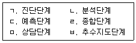
- ㄱ→ㄴ→ㄷ→ㄹ→ㅂ→ㅁ
- ㄱ→ㄷ→ㄴ→ㄹ→ㅁ→ㅂ
- ㄴ→ㄱ→ㄹ→ㄷ→ㅂ→ㅁ
- ㄴ→ㄹ→ㄱ→ㄷ→ㅁ→ㅂ
(정답률: 78%)
3. 다음은 무엇에 관한 설명인가?
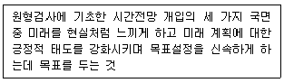
- 방향성
- 변별성
- 주관성
- 통합성
(정답률: 60%)
4. 어떤 문제의 밑바닥에 깔려 있는 혼란스러운 감정과 갈등을 가려내어 분명히 해주는 것은?
- 명료화
- 경청
- 반영
- 직면
(정답률: 79%)
5. 직업상담사의 윤리강령에 관한 설명으로 가장 거리가 먼 것은?
- 상담자는 상담에 대한 이론적, 경험적 훈련과 지식을 갖춘 것을 전제로 한다.
- 상담자는 내담자의 성장, 촉진과 문제 해결 및 방안을 위해 시간과 노력상의 최선을 다한다.
- 상담자는 자신의 능력 및 기법의 한계 때문에 내담자의 문제를 다른 전문직 동료나 기관에 의뢰해서는 안된다.
- 상담자는 내담자가 이해, 수용할 수 있는 한도 내에서 기법을 활용한다.
(정답률: 89%)
6. 직업상담의 목적에 대한 설명으로 틀린 것은?
- 직업상담은 내담자가 이미 결정한 직업계획과 직업선택을 확신·확인하는 과정이다.
- 직업상담은 개인의 직업적 목표를 명확히 해 주는 과정이다.
- 직업상담은 내담자에게 진로관련 의사결정 능력을 길러주는 과정은 아니다.
- 직업상담은 직업선택과 직업생활에서의 능동적인 태도를 함양하는 과정이다.
(정답률: 74%)
7. Butcher가 제시한 집단직업상담을 위한 3단 모델에 해당하지 않는 것은?
- 탐색단계
- 전환단계
- 평가단계
- 행동단계
(정답률: 81%)
8. Super의 진로발달이론에 대한 설명으로 틀린 것은?
- 진로발달은 성장기, 탐색기, 확립기, 유지기, 쇠퇴기를 거쳐 이루어진다.
- 진로선택은 자아개념의 실현과정이다.
- 진로발달에 있어서 환경의 영향보다는 개인의 흥미, 적성, 가치가 더 중요하다.
- 자아개념은 직업적 선호와 환경과의 상호작용을 통해 계속 변화한다.
(정답률: 76%)
9. 내담자의 낮은 자기효능감을 증진시키기 위한 방법으로 적합하지 않은 것은?
- 내담자의 장점을 강조하며 격려하기
- 긍정적인 단계를 강화하기
- 내담자와 비슷한 인물이나 관련자료 보여주기
- 직업대안 규명하기
(정답률: 81%)
10. 상담 중기 과정의 활동으로 가장 거리가 먼 것은?
- 내담자에게 문제를 직면시키고 도전하게 한다.
- 내담자가 가진 문제의 심각도를 평가한다.
- 내담자가 실천할 수 있도록 동기를 조성한다.
- 문제에 대한 대안을 현실 생활에 적용하고 실천하도록 돕는다.
(정답률: 67%)
11. 다음은 직업상담모형 중 어떤 직업상담에 관한 설명인가?
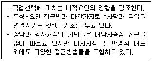
- 정신역동적 직업상담
- 포괄적 직업상담
- 발달적 직업상담
- 행동주의 직업상담
(정답률: 54%)
12. 내담자와 관련된 정보를 수집하여 내담자의 행동을 이해하고 해석하는데 기본이 되는 상담기법으로 가장 거리가 먼 것은?
- 한정된 오류 정정하기
- 왜곡된 사고 확인하기
- 반성의 장 마련하기
- 변명에 초점 맞추기
(정답률: 43%)
13. 내담자의 부적절한 행동을 변화하는데 자주 사용하는 체계적 둔감화의 주요 원리는?
- 상호억제
- 변별과 일반화
- 소거
- 조성
(정답률: 59%)
14. 직업상담 과정에서의 사정단계를 바르게 나열한 것은?
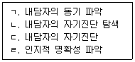
- ㄷ→ㄱ→ㄴ→ㄹ
- ㄷ→ㄴ→ㄹ→ㄱ
- ㄹ→ㄷ→ㄱ→ㄴ
- ㄹ→ㄱ→ㄷ→ㄴ
(정답률: 63%)
15. Yalom이 제시한 실존주의 상담에서의 4가지 궁극적 관심사에 해당하지 않는 것은?
- 죽음
- 자유
- 고립
- 공허
(정답률: 67%)
16. 직업상담 시 활용할 수 있는 측정도구에 관한 설명으로 틀린 것은?
- 자기 효능감 척도는 어떤 과제를 어느 정도 수준으로 수행할 수 있는 능력을 갖추었다고 스스로 판단하는지의 정도를 측정한다.
- 소시오그램은 원래 가족치료에 활용하기 위해 개발되었는데, 기본적으로 경력상담 시 먼저 내담자의 가족이나 선조들의 직업 특징에 대한 시각적 표상을 얻기 위해 도표를 만드는 것이다.
- 역할놀이에서는 내담자의 수행행동을 나타낼 수 있는 업무상황을 제시해준다.
- 카드분류는 내담자의 가치관, 흥미, 직무기술, 라이프스타일 등의 선호형태를 측정하는데 유용하다.
(정답률: 79%)
17. 상담관계의 틀을 구조화하기 위해서 다루어야할 요소와 가장 거리가 먼 것은?
- 상담자의 역할과 책임
- 내담자의 성격
- 상담의 목표
- 상담시간과 장소
(정답률: 65%)
18. 행동주의 상담에서 부적응행동을 감소시키는데 주로 사용되는 기법은?
- 행동조성법
- 모델링
- 노출법
- 토큰법
(정답률: 48%)
19. 생애진로사정에 관한 설명으로 옳은 것은?
- 직업상담에서 생애진로사정은 초기단계보다 중·말기단계 면접법으로 사용된다.
- 생애진로사정은 Adler의 개인심리학에 부분적으로 기초를 둔다.
- 생애진로사정은 객관적인 사실 확인에만 중점을 둔다.
- 생애진로사정에서는 여가생활, 친구관계 등과 같이 일과 직접적으로 관련이 없는 주제는 제외된다.
(정답률: 79%)
20. 상담기법 중 내담자가 전달하는 이야기의 표면적 의미를 상담자가 다른 말로 바꾸어서 말하는 것은?
- 탐색적 질문
- 요약과 재진술
- 명료화
- 적극적 경청
(정답률: 80%)
2과목: 직업심리학
21. 특성-요인이론에 관한 설명으로 가장 적합한 것은?
- 자신이 선택한 투자에 최대한의 보상을 받을 수 있는 직업을 선택한다.
- 개인적 흥미나 능력 등을 심리검사나 객관적 수단을 통해 밝혀낸다.
- 사회·문화적 환경 또는 사회구조와 같은 요인이 직업선택에 영향을 준다.
- 동기, 인성, 욕구와 같은 개인의 심리적 수단에 의해 직업을 선택한다.
(정답률: 64%)
22. 직무에 대한 하위개념 중 특정 목적을 수행하는 작업 활동으로 직무분석의 가장 작은 단위가 되는 것은?
- 임무
- 과제
- 직위
- 직군
(정답률: 68%)
23. 다음에 해당하는 스트레스 관리전략은?
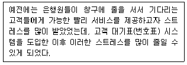
- 반응지향적 관리전략
- 증후지향적 관리전략
- 평가지향적 관리전략
- 출처지향적 관리전략
(정답률: 66%)
24. 인간의 진로발달단계를 성장기, 탐색기, 확립기, 유지기, 쇠퇴기를 나누고 각 단계의 특징을 설명한 학자는?
- 긴즈버그(Ginzberg)
- 에릭슨(Ericson)
- 수퍼(Super)
- 고드프레드슨(Gottfredson)
(정답률: 78%)
25. 고용노동부에서 실시하는 일반직업적성검사가 측정하는 영역이 아닌 것은?
- 형태지각력
- 공간판단력
- 상황판단력
- 언어능력
(정답률: 53%)
26. 직업선택과정에 관한 설명으로 옳은 것은?
- 직업에 대해 정확한 정보만 가지고 있으면 직업을 효과적으로 선택할 수 있다.
- 주로 성년기에 이루어지기 때문에 어릴 때 경험은 영향력이 없다.
- 개인적인 문제이기 때문에 가족이나 환경의 영향은 관련이 없다.
- 일생동안 계속 이루어지는 과정이기 때문에 다양한 시기에서 도움이 필요하다.
(정답률: 78%)
27. 직무분석 방법에 관한 설명으로 옳은 것은?
- 관찰법은 실제 업무를 직접적으로 관찰함으로써 정신적인 활동까지 알아볼 수 있다.
- 면접법을 사용하려면 면접의 목적을 미리 알려주고 편안한 분위기를 조성해야 한다.
- 설문조사법은 많은 사람에 대한 정보를 얻을 수 있지만 시간이 오래 걸린다.
- 작업일지법은 정해진 양식에 따라 업무 담당자가 직접 작성하므로 정확한 정보를 준다.
(정답률: 70%)
28. 스트레스로 인해 나타날 수 있는 신체의 변화로 옳지 않은 것은?
- 호흡과 심장박동이 빨라지고 혈압도 높아진다.
- 부신선과 부신 피질을 자극해 에피네프린(아드레날린)을 생성한다.
- 부교감 신경계가 활성화되어 각성이 일어난다.
- 부신피질 호르몬인 코티졸이 분비된다.
(정답률: 55%)
29. Roe의 직업분류체계에 관한 설명으로 틀린 것은?
- 일의 세계를 8가지 장(field)과 6가지 수준(level)으로 구성된 2차원의 체계로 조직화했다.
- 원주상의 순서대로 8가지 장(field)은 서비스, 사업상 접촉, 조직, 기술, 옥외, 과학, 예술과 연예, 일반문화이다.
- 서비스 장(field)들은 사람지향적이며 교육, 사회봉사, 임상심리 및 의술이 포함된다.
- 6가지 수준(level)은 근로자의 직업과 관련된 정교화, 책임, 보수, 훈련의 정도를 묘사하며, 수준 1이 가장 낮고, 수준 6이 가장 높다.
(정답률: 69%)
30. 기초통계치 중 명명척도로 측정된 자료에서는 파악할 수 없고, 서열척도 이상의 척도로 측정된 자료에서만 파악할 수 있는 것은?
- 중앙치
- 최빈치
- 표준편차
- 평균
(정답률: 49%)
31. 타당도에 관한 설명으로 틀린 것은?
- 안면타당도는 전문가가 문항을 읽고 얼마나 타당해 보이는지를 평가하는 방법이다.
- 검사의 신뢰도는 타당도 계수의 크기에 영향을 준다.
- 구성타당도를 평가하는 방법으로 요인분석 방법이 있다.
- 예언타당도는 타당도를 구하는데 시간이 많이 걸린다는 단점이 있다.
(정답률: 55%)
32. 직업적용 이론과 관련하여 개발된 검사도구가 아닌 것은?
- MIQ(Minnesota Importance Questionnaire)
- JDQ(Job Description Questionnaire)
- MSQ(Minnesota Satisfaction Questionnaire)
- CMI(Career Maturity Inventory)
(정답률: 67%)
33. 진로발달에서 맥락주의(contextualism)에 관한 설명으로 틀린 것은?
- 행위는 맥락주의의 주요 관심대상이다.
- 개인보다는 환경의 영향을 강조한다.
- 행위는 인지적·사회적으로 결정되며 일상의 경험을 반영하는 것이다.
- 진로연구와 진로상담에 대한 맥락상의 행위설명을 확립하기 위하여 고안된 방법이다.
(정답률: 65%)
34. 다음은 Holland의 어떤 직업환경에 관한 설명인가?
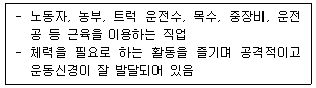
- 지적 환경
- 사회적 환경
- 현실적 환경
- 심미적 환경
(정답률: 76%)
35. 다음 중 동일한 검사를 동일한 피검자 집단에 일정 시간 간격을 두고 두 번 실시하여 얻은 두 검사 점수의 상관계수에 의하여 신뢰도를 측정하는 방법은?
- 동형검사 신뢰도
- 검사-재검사 신뢰도
- 반분검사 신뢰도
- 문항 내적 일관성 신뢰도
(정답률: 74%)
36. 경력진단검사에 관한 설명으로 틀린 것은?
- 경력결정검사(CDS)는 경력관련 의사결정 실패에 관한 정보를 제공하기 위해 개발되었다.
- 개인직업상황검사(MVS)는 직업적 정체성 형성여부를 파악하기 위한 것이다.
- 경력개발검사(CDI)는 경력관련 의사결정에 대한 참여 준비도를 측정하기 위한 것이다.
- 경력태도검사(CBI)는 직업선택에 필요한 정보 및 환경, 개인적인 장애가 무엇인지를 알려준다.
(정답률: 45%)
37. 다음은 질적측정도구 중 무엇에 관한 설명인가?
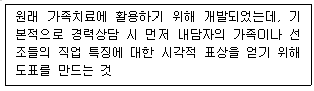
- 자기 효능감 척도
- 역할놀이
- 제노그램
- 카드분류
(정답률: 79%)
38. 크럼볼츠(Krumboltz)의 사회학습 이론에서 진로선택에 영향을 미치는 요인을 모두 고른 것은?
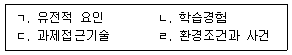
- ㄱ, ㄴ
- ㄱ, ㄷ, ㄹ
- ㄴ, ㄷ, ㄹ
- ㄱ, ㄴ, ㄷ, ㄹ
(정답률: 69%)
39. 셀리(Selye)가 제시한 스트레스 반응단계(일반적응증후군)를 순서대로 바르게 나열한 것은?
- 소진-저항-경고
- 저항-경고-소진
- 소진-경고-저항
- 경고-저항-소진
(정답률: 74%)
40. 조직 구성원에게 다양한 직무를 경험하게 함으로써 여러 분야의 능력을 개발시키는 경력개발 프로그램은?
- 직무 확충(Job Enrichment)
- 직무 순환(Job Rotation)
- 직무 확대(Job Enlargement)
- 직무 재분류(Job Reclassification)
(정답률: 79%)
3과목: 직업정보론
41. 실업급여 중 취업촉진 수당이 아닌 것은?
- 직업능력개발 수당
- 광역 구직활동비
- 훈련연장급여
- 이주비
(정답률: 67%)
42. 다음은 워크넷에서 제공하는 성인 대상 심리검사 중 무엇에 관한 설명인가?
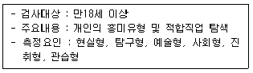
- 구직준비도 검사
- 직업가치관 검사
- 직업선호도 검사 S형
- 성인용 직업적성검사
(정답률: 64%)
43. 내용분석법을 통해 직업정보를 수집할 때의 장점이 아닌 것은?
- 정보제공자의 반응성이 높다.
- 장기간의 종단연구가 가능하다.
- 필요한 경우 재조사가 가능하다.
- 역사연구 등 소급조사가 가능하다.
(정답률: 61%)
44. 한국직업정보시스템(워크넷 직업·진로)의 직업정보 찾기 중 조건별 검색의 검색 항목으로 옳은 것은?
- 평균학력, 근로시간
- 근로시간, 평균연봉
- 평균연봉, 직업전망
- 직업전망, 평균학력
(정답률: 54%)
45. 제7차 한국표준직업분류의 포괄적인 업무에 대한 직업분류 원칙에 해당되지 않는 것은?
- 주된 직무 우선 원칙
- 최상급 직능수준 우선 원칙
- 생산업무 우선 원칙
- 수입 우선의 원칙
(정답률: 68%)
46. 직업안정법령상 직업안정기관의 장이 수집·제공하여야 할 고용정보에 해당하지 않는 것은?
- 직무분석의 방법과 절차
- 경제 및 산업동향
- 구인·구직에 관한 정보
- 직업에 관한 정보
(정답률: 51%)
47. 직업정보의 가공에 대한 설명으로 가장 적합하지 않은 것은?
- 효율적인 정보제공을 위해 시각적 효과를 부가한다.
- 정보를 공유하는 방법과도 연관되어 있다.
- 긍정적인 정보를 제공하는 입장에서 출발해야 한다.
- 정보의 생명력을 측정하여 활용방법을 선정하고 이용자에게 동기를 부여할 수 있도록 구상한다.
(정답률: 69%)
48. 다음은 제10차 한국표준산업분류 중 어떤 산업분류에 관한 설명인가?
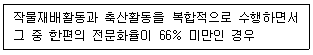
- 작물재배업
- 축산업
- 작물재배 및 축산 복합농업
- 작물재배 및 축산 관련 서비스업
(정답률: 68%)
49. 한국직업사전의 직무기능 자료(data)항목 중 무엇에 관한 설명인가?
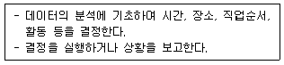
- 종합
- 조정
- 계산
- 수집
(정답률: 51%)
50. 국가기술자격 중 실기시험만 시행할 수 있는 종목이 아닌 것은?
- 금속재창호기능사
- 항공사진기능사
- 로더운전기능사
- 미장기능사
(정답률: 60%)
51. 제7차 한국표준직업분류상 다음 개념에 해당하는 대분류는?
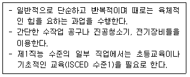
- 단순노무 종사자
- 장치·기계 조작 및 조립종사자
- 기능원 및 관련 기능 종사자
- 판매 종사자
(정답률: 77%)
52. 제7차 한국표준직업분류의 직무능력수준 중 제2직능 수준이 요구되는 대분류는?
- 관리자
- 전문가 및 관련 종사자
- 단순노무 종사자
- 농림어업 숙련 종사자
(정답률: 65%)
53. 국민내일배움카드에 관한 설명으로 틀린 것은?(문제 오류로 가답안 발표시 1번으로 발표되었지만 최종정답 발표시 전항 정답 처리 되었습니다. 여기서는 가답안인 1번을 누르면 정답 처리 됩니다.)
- 특수형태근로종사자도 신청이 가능하다.
- 실업, 재직, 자영업 여부에 관계없이 카드 발급이 가능하다.
- 국가기간·전략산업직종 등 특화과정은 훈련비 전액을 지원한다.
- 직업능력개발 훈련이력을 종합적으로 관리하는 제도이다.
(정답률: 73%)
54. 제10차 한국표준산업분류의 산업분류 적용원칙에 관한 설명으로 틀린 것은?
- 생산단위는 산출물뿐만 아니라 투입물과 생산공정 등을 고려하여 그들의 활동을 가장 정확하게 설명한 항목에 분류
- 생산단위 소유 형태, 법적 조직 유형 또는 운영방식도 산업분류에 영향을 미침
- 산업활동이 결합되어 있는 경우에는 그 활동단위의 주된 활동에 따라 분류
- 공식적·비공식적 생산물, 합법적·불법적인 생산은 달리 분류하지 않음
(정답률: 47%)
55. 국가기술자격 산업기사의 응시요건으로 틀린 것은?
- 응시하려는 종목이 속하는 동일 및 유사 직무 분야에서 1년 이상 실무에 종사한 사람
- 관련학과의 2년제 또는 3년제 전문대학 졸업자 등 또는 그 졸업예정자
- 고용노동부령이 정하는 기능경기대회 입상자
- 응시하려는 종목이 속하는 동일 및 유사 직무분야의 다른 종목의 산업기사 등급 이상의 자격을 취득한 사람
(정답률: 66%)
56. 직업정보 분석에 관한 설명으로 틀린 것은?
- 직업정보는 직업전문가에 의해 분석되어야 한다.
- 수집된 정보에 대하여는 목적에 맞도록 몇 번이고 분석하여 가장 최신의 객관적이며 정확한 자료를 선정한다.
- 동일한 정보라 할지라도 다각적인 분석을 시도하여 해석을 풍부히 한다.
- 직업정보원과 제공원에 관한 정보는 알 필요가 없다.
(정답률: 77%)
57. 근로자직업능력 개발법령상 직업능력개발훈련시설을 설치할 수 있는 공공단체가 아닌 것은?
- 한국산업인력공단(한국산업인력공단이 출연하여 설립한 학교법인을 포함)
- 안전보건공단
- 한국장애인고용공단
- 근로복지공단
(정답률: 66%)
58. 제10차 한국표준산업분류의 산업분류 적용원칙에 관한 설명으로 틀린 것은?
- 산업은 유사한 성질을 갖는 산업활동에 주로 종사하는 생산단위의 집합이다.
- 각 생산단위가 노동, 자본, 원료 등 자원을 투입하여 재화 또는 서비스를 생산·제공하는 일련의 활동과정이 산업활동이다.
- 산업활동 범위에는 가정 내 가사활동도 포함된다.
- 산업분류는 생산단위가 주로 수행하는 산업활동을 분류 기준과 원칙에 맞춰 그 유사성에 따라 체계적으로 유형화한 것이다.
(정답률: 78%)
59. 워크넷에서 제공하는 학과정보 중 자연계열에 해당하지 않는 것은?
- 안경광학과
- 생명과학과
- 수학과
- 지구과학과
(정답률: 70%)
60. 한국직업전망에서 제공하는 정보에 대한 설명으로 틀린 것은?
- ‘하는 일’은 해당 직업 종사자가 일반적으로 수행하는 업무내용과 과정에 대해 서술하였다.
- ‘관련 학과’는 일반적 입직조건을 고려하여 대학에 개설된 대표 학과명만을 수록하였다.
- ‘적성과 흥미’는 해당 직업에 취업하거나 업무를 수행하는데 유리한 적성, 성격, 흥미, 지식 및 기술 등을 수록하였다.
- 1‘학력’은 ‘고졸이하’, ‘전문대졸’, ‘대졸’, ‘대학원졸 이상’으로 구분하여 제시하였다.
(정답률: 57%)
4과목: 노동시장론
61. 성과급 제도를 채택하기 어려운 경우는?
- 근로자의 노력과 생산량과의 관계가 명확한 경우
- 생산원가 중에서 노동비용에 대한 통제가 필요하지 않는 경우
- 생산물의 질(quality)이 일정한 경우
- 생산량이 객관적으로 측정 가능한 경우
(정답률: 55%)
62. 노동시장에서의 차별로 인해 발생하는 임금격차에 대한 설명으로 틀린 것은?
- 직장 경력의 차이에 따른 인적자본 축적의 차이로는 임금격차를 설명할 수 없다.
- 경쟁적인 시장경제에서는 고용주에 의한 차별이 장기간 지속될수 없다.
- 소비자의 차별적인 선호가 있다면 차별적인 임금격차가 지속될 수 있다.
- 정부가 차별적 임금을 지급하도록 강제하는 경우에는 경쟁시장에서도 임금격차가 지속될 수 있다.
(정답률: 45%)
63. 임금의 법적 성격에 관한 학설의 하나인 노동대가설로 설명할 수 있는 임금은?
- 직무수당
- 휴업수당
- 휴직수당
- 가족수당
(정답률: 70%)
64. 다음 중 분단노동시장가설이 암시하는 정책적 시사점과 가장 거리가 먼 것은?
- 노동시장의 공급측면에 대한 정부개입 또는 지원을 지나치게 강조하는 것에 대해 부정적이다.
- 공공적인 고용기회의 확대나 임금보조, 차별대우 철폐를 주장한다.
- 외부노동시장의 중요성을 강조한다.
- 노동의 인간화를 도모하기 위한 의식적인 정책노력이 필요하다.
(정답률: 53%)
65. 시간당 임금이 5000원에서 6000원으로 인상될 때, 노동수요량이 10000에서 9000으로 감소한다면 노동수요의 임금탄력성은? (단, 노동수요의 임금탄력성은 절댓값이다.)
- 0.2
- 0.5
- 1
- 2
(정답률: 55%)
66. 실업대책에 관한 설명으로 틀린 것은?
- 일반적으로 실업대책은 고용안정정책, 고용창출정책, 사회안전망 형성정책으로 구분된다.
- 직업훈련의 효율성 제고는 고용안정정책에 해당한다.
- 고용창출정책은 실업률로부터 탈출을 촉진하는 정책이다.
- 공공부문 유연성 확립은 사회안전망 형성정책에 해당한다.
(정답률: 41%)
67. 구조적 실업에 대한 설명으로 틀린 것은?
- 노동시장에 대한 정보 부족에 기인한다.
- 구인처에서 요구하는 자격을 갖춘 근로자가 없는 경우에 발생한다.
- 산업구조 변화에 노동력 공급이 적절히 대응하지 못해서 발생한다.
- 적절한 직업훈련 기회를 제공하는 것이 구조적 실업을 완화하는데 중요하다.
(정답률: 66%)
68. 노동조합의 형태 중 노동시장의 지배력과 조직으로서의 역량이 극히 약하다고 볼 수 있는 것은?
- 기업별 노동조합
- 산업별 노동조합
- 일반 노동조합
- 직업별 노동조합
(정답률: 53%)
69. 신고전학파가 주장하는 노동조합의 사회적 비용의 증가 요인이 아닌 것은?
- 비노조와의 임금격차와 고용저하에 따른 비효율 배분
- 경직적 인사제도에 의한 기술적 비효율
- 파업으로 인한 생산중단에 따른 생산적 비효율
- 작업방해에 의한 구조적 비효율
(정답률: 46%)
70. 노동조합이 노동공급을 제한함으로써 발생할 수 있는 효과로 옳은 것은?
- 노동조합이 조직화된 노동시장의 임금이 하락할 것이다.
- 노동조합이 조직화되지 않은 노동시장의 공급곡선이 좌상향으로 이동할 것이다.
- 노동조합이 조직화된 노동시장의 노동수요곡선이 우상향으로 이동할 것이다.
- 노동조합이 조직화되지 않은 노동시장의 임금이 하락할 것이다.
(정답률: 43%)
71. 생산물시장과 노동시장이 완전경쟁일 때 노동의 한계생산량이 10개이고, 생산물 가격이 500원이며 시간당 임금이 4000원이라면 이윤을 극대화하기 위한 기업의 반응으로 옳은 것은?
- 임금을 올린다.
- 노동을 자본으로 대체한다.
- 노동의 고용량을 증대시킨다.
- 고용량을 줄이고 생산을 감축한다.
(정답률: 64%)
72. 노동력의 10%가 매년 구직활동을 하고 구직에 평균 3개월이 소요되는 경우 연간 몇 %의 실업률이 나타나게 되는가?
- 2.5%
- 2.7%
- 3.0%
- 3.3%
(정답률: 57%)
73. 만일 여가가 열등재라면 개인의 노동 공급곡선의 형태는?
- 후방굴절한다.
- 완전비탄력적이다.
- 완전탄력적이다.
- 우상향한다.
(정답률: 52%)
74. 다음은 후방굴절형의 노동공급곡선을 나타낸 것이다. 이 때 노동공급곡선상의 a, b 구간에 대한 설명으로 옳은 것은?
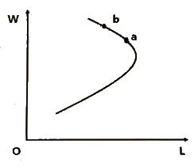
- 소득효과=0
- 대체효과=0
- 소득효과 ＜ 대체효과
- 소득효과 ＞대체효과
(정답률: 65%)
75. 연봉제 성공을 위한 조건과 가장 거리가 먼 것은?
- 직무분석
- 인사고과
- 목표관리제도
- 품질관리제도
(정답률: 49%)
76. 마찰적 실업을 해소하기 위한 가장 효과적 정책은?
- 성과급제를 도입한다.
- 근로자 파견업을 활성화한다.
- 협력적 노사관계를 구축한다.
- 구인·구직 정보제공시스템의 효율성을 제고한다.
(정답률: 70%)
77. 다음은 무엇에 관한 설명인가?
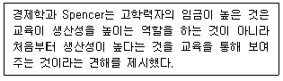
- 인적자본 이론
- 혼잡가설
- 고학력자의 맹목적 우대
- 교육의 신호모형
(정답률: 56%)
78. 노동력의 동질성을 가정하고 있는 이론은?
- 신고전학파이론
- 직무경쟁론
- 내부노동시장론
- 이중노동시장론
(정답률: 52%)
79. 노동조합을 다음과 같이 설명한 학자는?
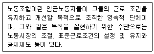
- S. Perlman
- L. Brentano
- F.Tannenbaum
- Sidney and Beatrice Webb
(정답률: 65%)
80. 미국에서 1935년에 제정된 전국노사관계법(National Labor Relation Act ; NLRA, 일명 와그너법) 이후에 확립된 노사관계는?
- 뉴딜적 노사관계
- 온건주의적 노사관계
- 바이마르적 노사관계
- 태프트-하트리적 노사관계
(정답률: 68%)
5과목: 노동관계법규
81. 근로자직업능력 개발법령상 직업능력개발훈련이 중요시되어야 하는 대상에 해당하는 것을 모두 고른 것은?
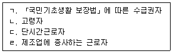
- ㄱ, ㄴ, ㄹ
- ㄱ, ㄴ, ㄷ
- ㄱ, ㄷ, ㄹ
- ㄴ, ㄷ, ㄹ
(정답률: 71%)
82. 남녀고용평등과 일·가정 양립 지원에 관한 법률에 관한 설명으로 틀린 것은?
- 고용노동부장관은 남녀고용평등 실현과 일·가정의 양립에 관한 기본계획을 5년마다 수립하여야 한다.
- 사업주는 동일한 사업 내의 동일 가치 노동에 대하여는 동일한 임금을 지급하여야 한다.
- 사업주가 임금차별을 목적으로 설립한 별개의 사업은 동일한 사업으로 본다.
- 사업주는 직장 내 성희롱 예방을 위한 교육을 분기별 1회 이상 하여야 한다.
(정답률: 67%)
83. 근로기준법령상 근로계약에 관한 설명으로 틀린 것은?
- 이 법에서 정하는 기준에 미치지 못하는 근로조건을 정한 근로계약은 그 부분에 한하여 무효로 한다.
- 근로계약은 기간을 정하지 아니한 것과 일정한 사업의 완료에 필요한 기간을 정한 것 외에는 그 기간은 1년을 초과하지 못한다.
- 단시간근로자의 근로조건은 그 사업장의 같은 종류의 업무에 종사하는 통상 근로자의 근로시간을 기준으로 산정한 비율에 따라 결정되어야 한다.
- 사용자는 근로계약 불이행에 대한 위약금을 예정하는 계약을 체결한 경우 300만원 이하의 과태료에 처한다.
(정답률: 47%)
84. 헌법상 노동 3권에 해당되지 않는 것은?
- 단체교섭권
- 평등권
- 단결권
- 단체행동권
(정답률: 75%)
85. 고용정책 기본법령상 고용정책심의회의 전문위원회에 해당하는 것을 모두 고른 것은?
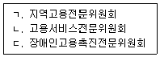
- ㄱ, ㄴ
- ㄱ, ㄷ
- ㄴ, ㄷ
- ㄱ, ㄴ, ㄷ
(정답률: 68%)
86. 남녀고용평등과 일·가정 양립지원에 관한 법률상 사업주가 동일한 사업 내의 동일 가치의 노동에 대하여 동일한 임금을 지급하지 아니한 경우 벌칙규정은?
- 5년 이하의 징역 또는 3천만원 이하의 벌금
- 3년 이하의 징역 또는 3천만원 이하의 벌금
- 1천만원 이하의 벌금
- 500만원 이하의 벌금
(정답률: 54%)
87. 근로자퇴직급여 보장법령상 ( )안에 들어갈 숫자로 옳은 것은?
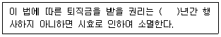
- 1
- 3
- 5
- 10
(정답률: 71%)
88. 근로기준법령상 휴게·휴일에 관한 설명으로 틀린 것은?
- 사용자는 근로시간이 8시간인 경우에는 1시간 이상의 휴게시간을 근로시간 도중에 주어야 한다.
- 사용자는 근로자에게 1주에 평균 1회 이상의 유급휴일을 보장하여야 한다.
- 사용자는 연장근로에 대하여는 통상임금의 100분의 50 이상을 가산하여 근로자에게 지급하여야 한다.
- 사용자는 8시간 이내의 휴일근로에 대하여는 통상임금의 100분의 100 이상을 가산하여 근로자에게 지급하여야 한다.
(정답률: 62%)
89. 근로기준법령상 근로자 명부의 기재사항에 해당하지 않는 것은?
- 성명
- 주소
- 이력
- 재산
(정답률: 76%)
90. 고용정책 기본법상 고용정책심의회의 위원으로 명시되지 않은 자는?
- 문화체육관광부 제1차관
- 기획재정부 제1차관
- 교육부차관
- 과학기술정보통신부 제1차관
(정답률: 50%)
91. 고용보험법령상 용어정의에 관한 설명으로 틀린 것은?
- “이직”이란 피보험자와 사업주 사이의 고용관계가 끝나게 되는 것을 말한다.
- “실업”이란 근로의 의사와 능력이 있음에도 불구하고 취업하지 못한 상태에 있는 것을 말한다.
- “실업의 인정”이란 직업안정기관의 장이 수급자격자가 실업한 상태에서 적극적으로 직업을 구하기 위하여 노력하고 있다고 인정하는 것을 말한다.
- “일용근로자”란 1일 단위로 근로계약을 체결하여 고용되는 자를 말한다.
(정답률: 57%)
92. 채용절차의 공정화에 관한 법령에 대한 설명으로 틀린 것은?
- 기초심사자료란 구직자의 응시원서, 이력서 및 자기소개서를 말한다.
- 이 법은 국가 및 지방자치단체가 공무원을 채용하는 경우에도 적용한다.
- 직종의 특수성으로 인하여 불가피한 사정이 있는 경우 고용노동부장관의 승인을 받아 구직자에게 채용심사비용의 일부를 부담하게 할 수 있다.
- 구인자는 구직자 본인의 재산 정보를 기초심사자료에 기재하도록 요구하여서는 아니 된다.
(정답률: 46%)
93. 고용보험법령상 구직급여의 수급요건으로 틀린 것은? (단, 기타 사항은 고려하지 않음.)
- 근로의 의사와 능력이 있음에도 불구하고 취업하지 못한 상태에 있을 것
- 이직사유가 수급자격의 제한 사유에 해당하지 아니할 것
- 재취업을 위한 노력을 적극적으로 할 것
- 건설일용근로자로서 수금자격 인정신청일 이전 7일간 연속하여 근로내역이 없을 것
(정답률: 69%)
94. 고용상 연령차별금지 및 고령자고용촉진에 관한 법률상 제조업의 기준고용률은?
- 그 사업장의 상시근로자수의 100분의 2
- 그 사업장의 상시근로자수의 100분의 3
- 그 사업장의 상시근로자수의 100분의 6
- 그 사업장의 상시근로자수의 100분의 7
(정답률: 64%)
95. 근로자직업능력 개발법령상 훈련의 목적에 따라 구분한 직업능력개발훈련에 해당하지 않는 것은?
- 양성훈련
- 집체훈련
- 향상훈련
- 전직훈련
(정답률: 65%)
96. 직업안정법령상 직업소개사업에 관한 설명으로 틀린 것은?
- 국내 무료직업소개사업을 하려는 자는 주된 사업소의 소재지를 관할하는 특별자치도지사·시장·군수 및 구청장에게 신고하여야 한다.
- 국외 무료직업소개사업을 하려는 자는 고용노동부장관에게 신고하여야 한다.
- 국내 유료직업소개사업을 하려는 자는 주된 사업소의 소재지를 관할하는 특별자치도지사·시장·군수 및 구청장에게 등록하여야 한다.
- 국외 유료직업소개사업을 하려는 자는 고용노동부장관에게 신고하여야 한다.
(정답률: 50%)
97. 남녀고용평등과 일·가정 양립지원에 관한 법령상 ( )에 들어갈 숫자가 순서대로 나열된 것은?
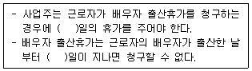
- 10, 60
- 10, 90
- 15, 60
- 15, 90
(정답률: 58%)
98. 파견근로자보호등에관한법령상 근로자파견사업에 관한 설명으로 틀린 것은?
- 건설공사현장에서 이루어지는 업무에 대하여는 근로자파견사업을 하여서는 아니된다.
- 파견사업주, 사용사업주, 파견근로자 간의 합의가 있는 경우에는 파견기간을 연장할 수 있다.
- 「고용상 연령차별금지 및 고령자고용촉진에 관한 법률」의 고령자인 파견근로자에 대하여는 2년을 초과하여 근로자파견기간을 연장할 수 있다.
- 근로자파견사업 허가의 유효기간은 2년으로 한다.
(정답률: 49%)
99. 고용보험법령상 육아휴직 급여 신청기간의 연장사유가 아닌 것은?
- 범죄혐의로 인한 형의 집행
- 배우자의 질병
- 천재지변
- 자매의 부상
(정답률: 69%)
100. 직업안정법령상 ( )안에 들어갈 공통적인 숫자는?
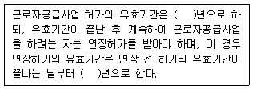
- 1
- 2
- 3
- 5
(정답률: 64%)